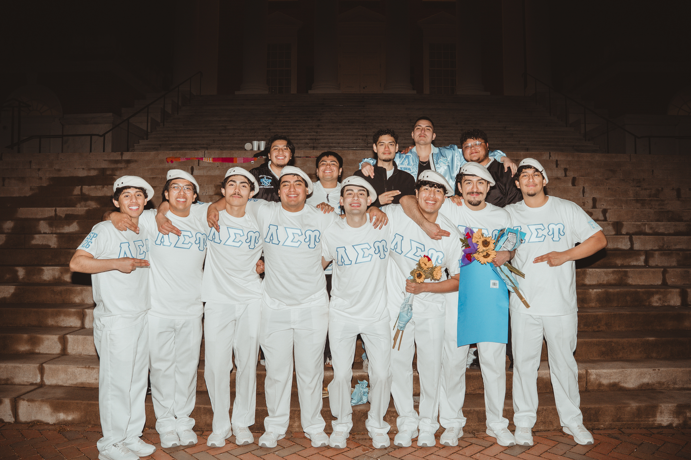
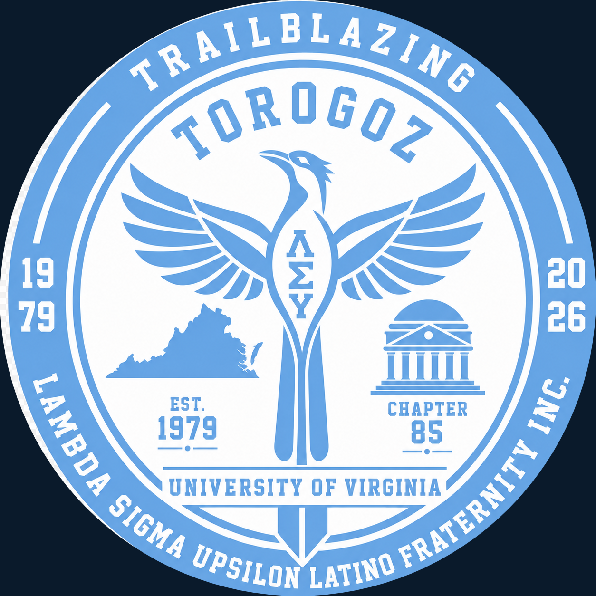

The Torogoz
Chapter
Established in Spring 2026 by eight founding brothers at the University of Virginia — inspired by the torogoz, the national bird of El Salvador and a symbol of freedom, resilience, and identity.
Meet the Founders →
Our eight founding brothers
Eight men set the foundation for the Torogoz Chapter, carrying the values of Lambda Sigma Upsilon to Grounds for the first time. Through shared purpose and the trials of the founding process, they forged a bond that became the chapter's cornerstone and its lasting legacy.
Built at the University of Virginia
From the first interest meetings to our chartering, the Torogoz Chapter was built by Latino students determined to create a home for culture, brotherhood, and excellence on Grounds — the first chapter of Lambda Sigma Upsilon at the University of Virginia.


The meaning of Torogoz
The torogoz symbolizes freedom, resilience, and cultural identity. Known for its inability to live in captivity, it represents the importance of living authentically and without limits.
Its adaptability and strength reflect the journey of the founding brothers, while its deep cultural roots connect the chapter to heritage and unity.
Join the
Brotherhood
Ready to make an impact? Grow, inspire, lead purposefully, and become part of something bigger than yourself.
Connect With Us →